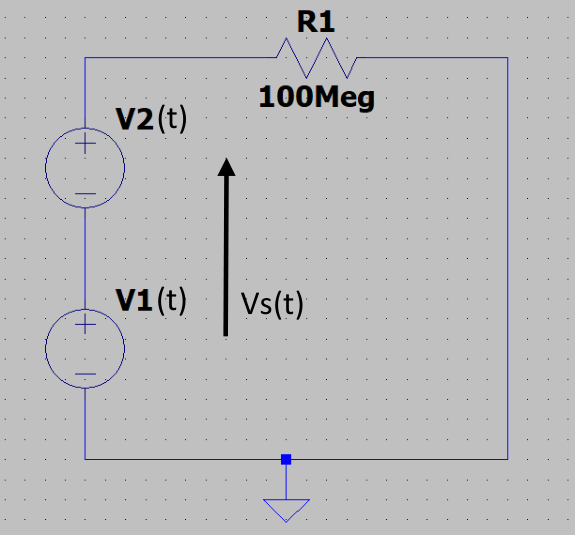

ELE1 · EKSAMENSSPØRGSMÅL 4
Visere og sinussignaler
En sinus er en roterende pil set fra siden. To sinusser med samme frekvens lægges sammen som pile.
(a) FORKLAR · 2 SLIDES
Hvad en viser er, og hvorfor den gør AC-regning til almindelig vektor-regning.
(b) BEREGN · 2 SLIDES
. Find med visere, og plot i samme diagram.
Opgavens kredsløb

→ / mellemrum: næste · ←: forrige · F: fuld skærm
SPM. 4 (a) · 1/2
En sinus er et hjul set fra sidenviseren er pilen, der drejer
Fra tid til viser
Amplitude = pilens længde. Den største værdi, sinussen når.
Omdrejningshastighed . Ved 50 Hz drejer pilen 50 gange i sekundet. Alle signaler har samme ω, så den skrives ikke med i viseren.
Startvinkel: hvor pilen peger til . Den fortæller, hvem der kommer først.
hvorforRegning bliver let. At lægge to sinusser sammen kræver trigonometri. To pile lægges bare sammen som vektorer.
Pilen drejer. Dens vandrette skygge (realdelen) er signalets værdi, og kurven viser den over tid
SIGEn viser er en pil med længden Vm og vinklen φ. Den drejer med ω, og projektionen af den er selve sinussignalet.
SPM. 4 (a) · 2/2
To sinusser lægges sammen som pilekun når frekvensen er den samme
3Over på rektangulær form
4Læg realdele og imaginærdele sammen hver for sig.
SIGSamme frekvens: læg pilene sammen. 12 + 12 giver kun 24 V, når de er i fase. Står de 90° fra hinanden, giver det 17 V.
SPM. 4 (b) · 1/2
Vs med visere
f = 50 Hzω = 314,16 rad/sV₁ = 12 cos(ωt)V₂ = 12 cos(ωt − π/2)R₁ = 100 MΩ≈ voltmeter, ingen strøm
1KVL: kilderne sidder i serie, og der løber ingen strøm i R₁
4Tilbage til tid
amplituden er , og Vs ligger midt mellem V₁ og V₂
Viserdiagrammet
SIGV₂ er 90° efter V₁. Pilene står vinkelret, så summen er 12√2 = 16,97 V ved −45°, præcis midt imellem.
SPM. 4 (b) · 2/2
V1, V2 og Vs i samme diagram
Viserne til tiden t
SIGVs topper ved 2,5 ms, midt mellem V₁'s top (0 ms) og V₂'s top (5 ms). I hvert øjeblik er Vs = V₁ + V₂.